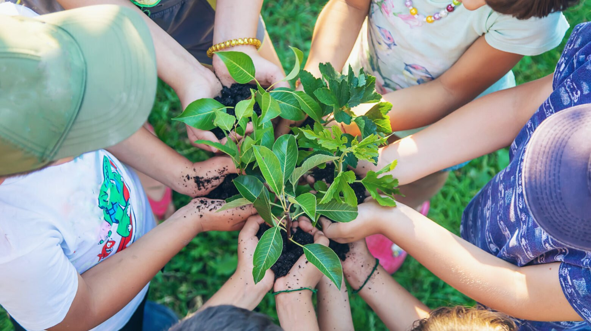

One school. Many campuses.
Green School started in Bali. Now it is growing worldwide.

Built on what they believe.


The heart of school.
The logo is a drawing of the Heart of School, the bamboo building at the centre of the Bali campus where it all began. One global mark, with rules for every school and sub-brand.

The default global logo.
Fresh, modern, distinctive.
Two greens and a light brown lead every piece. Open Sans keeps type simple and readable, like the campus itself.


Real moments, natural light.
Moment-based photography: students engaged, learning in the open, never posed. Clear rules on what to avoid keep every school on-brand.


Capture a moment in the day of a learner.
Drawn by hand.
Thirteen hand-drawn icons for the learning programme and the campus’s green systems, from the Bio Bus to the hydro vortex.
- Purposeful learning programme
- Passionate community of learners
- Wall-less learning environment
- Special programme
- Solar panel
- Hydro vortex
- Water filtration system
- Waste management centre
- Compost station
- Aquaponics centre
- Bio Bus
- Learning support
- Affiliations
Gifts that grow.
Natural materials only: kraft, bamboo and raw paper, laser-engraved with the mark.


We educate for sustainability.
- Brand architecture
- Logo system
- Location logos
- Colour & type
- Tone of voice
- Photography
- Social media
- Icon set
- Merchandise
Made for the feed.
Post sizes, crop rules and themes for Instagram, with do and don’t examples so any school can post with confidence.
Every format and ratio, in one place.
The classic grid post. Keep the subject near the centre, because the profile grid shows every post as a square.
Drag the photo, or use the arrow keys, to reframe it.

greenschoolbali 2hSend messagegreenschoolbali Hands in the soil. Learning that grows.